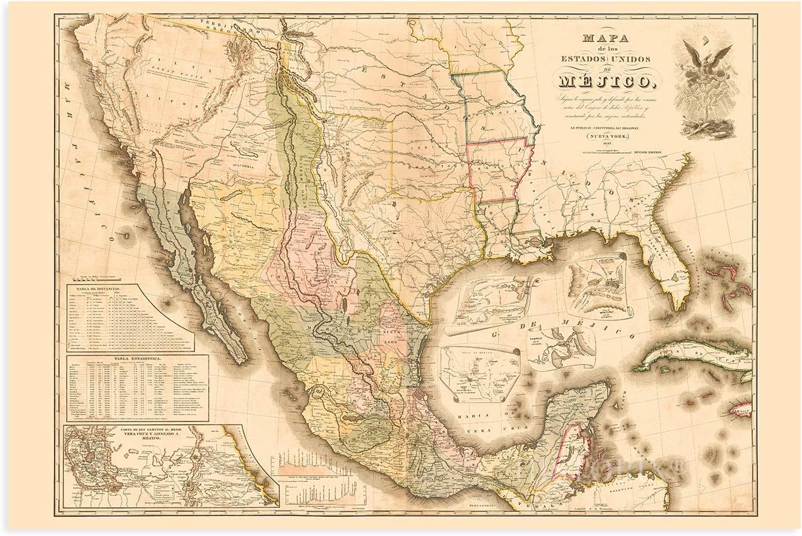

México, en sus inicios, estuvo habitado por diversos pueblos originarios que comenzaron a establecerse hace miles de años en el territorio conocido como Mesoamérica. Estas civilizaciones desarrollaron importantes avances en agricultura, arquitectura, matemáticas y astronomía. Entre las culturas más destacadas se encuentran los olmecas, mayas, teotihuacanos, zapotecas y mexicas, quienes construyeron grandes ciudades, templos y sistemas de organización social complejos. Antes de la llegada de los españoles en 1519, el territorio mexicano ya contaba con una gran riqueza cultural, tradiciones y conocimientos que sentaron las bases de la identidad histórica de México.
